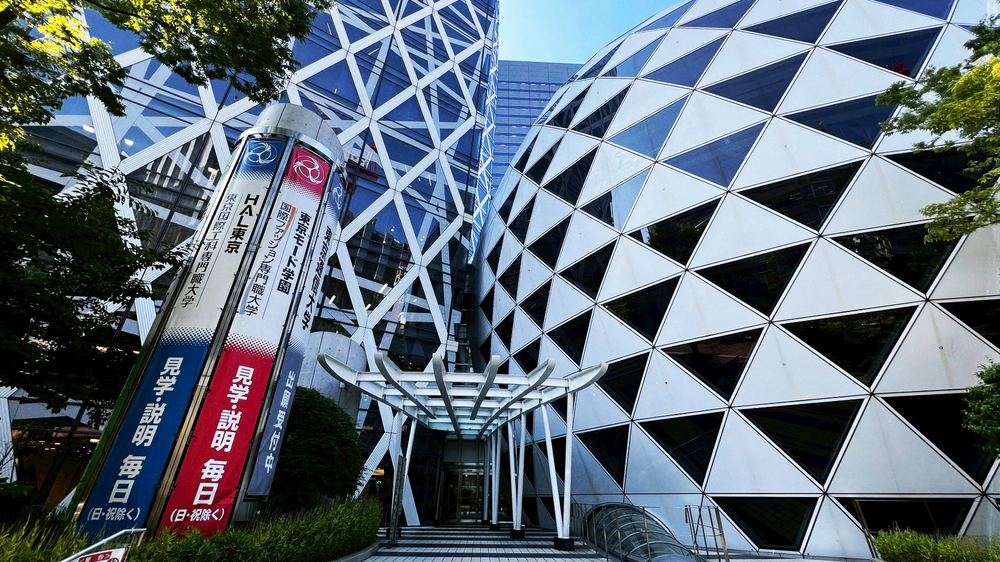
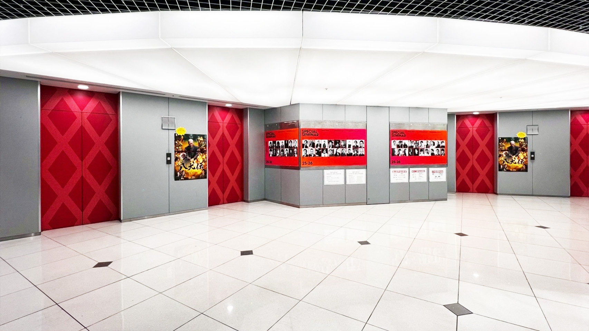
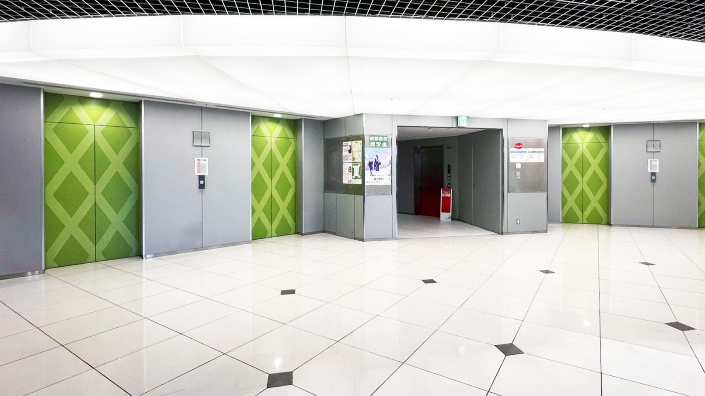
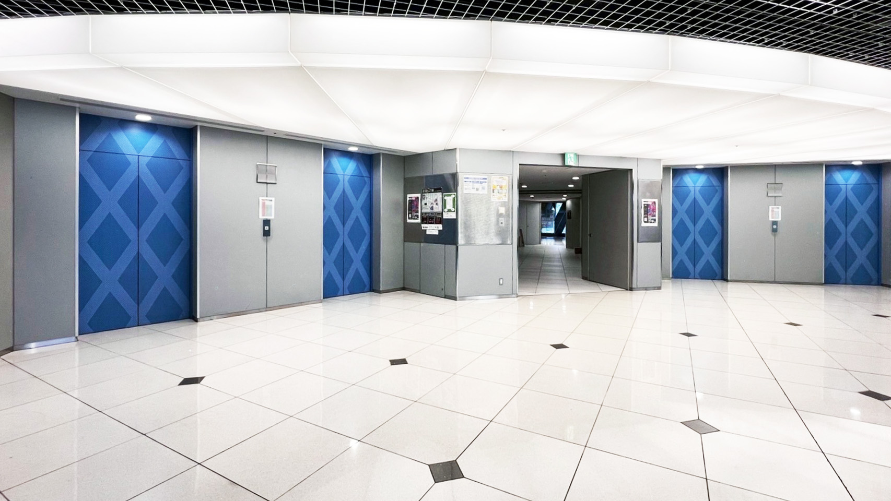
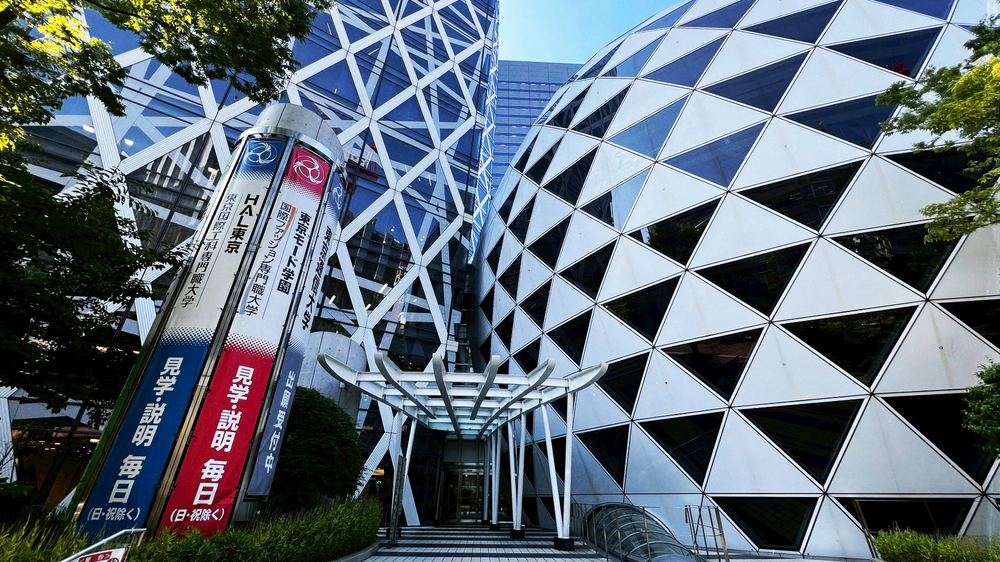
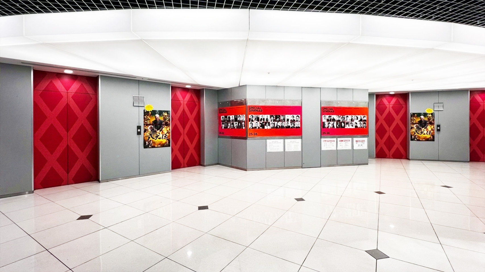
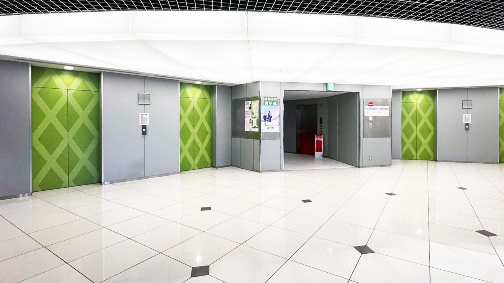
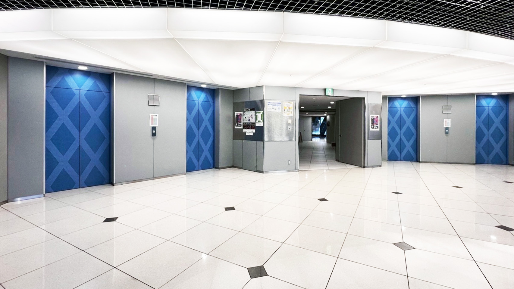
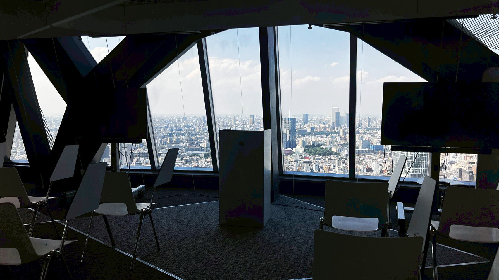
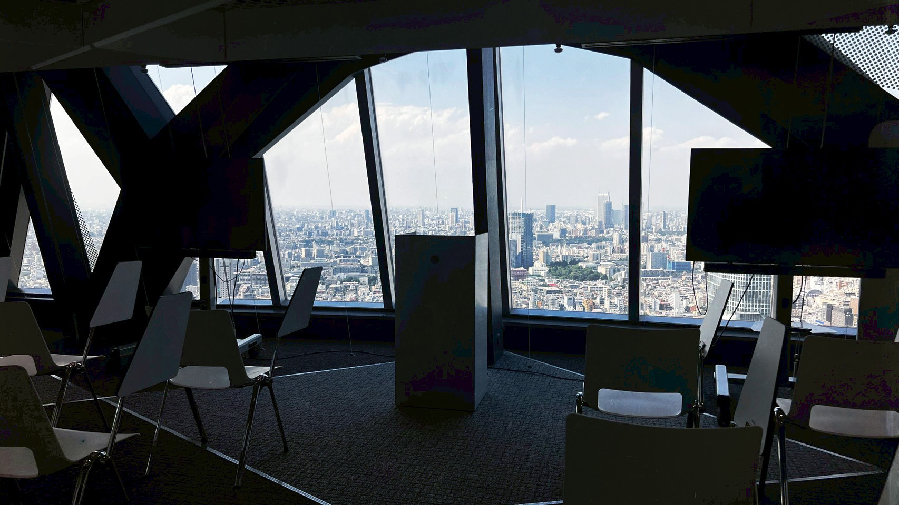

COCOON TOWERは、夢を育み、未来へ羽ばたく学生たちの学びの場です。繭のように温かく包み込みながら、新しい可能性をここから世界へ解き放ちます。
モード学園コクーンタワーは、高さ204メートル・地上50階建ての教育機関用超高層ビルです。2008年完成、HAL東京・首都医校・モード学園の3つの専門学校が入っています。
建物は繭（まゆ）型の独特な外観で、「学生の成長を包み込む繭」をイメージ。ねじれた楕円形のフォルムは、空気抵抗を軽減し、未来的な印象を与えます。
外壁は、白い対角線のバンド（斜め格子）が青いガラス外壁を包み込むデザイン。この斜め格子はデザイン性だけでなく、構造的強度を高め、地震への耐性も強化されています。
各フロアは三角形のループ状で、教室が中央コア（エレベーター・階段）を囲むように配置。3フロアごとに学生ラウンジがあり、学生同士の交流が促進されています。
 









 

でも、コクーンタワーの中を移動するのって、ちょっと迷いやすいかも…